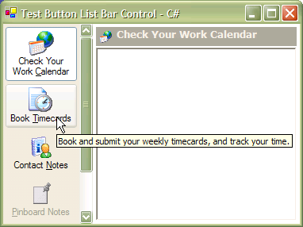
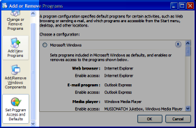

Button List Bar.NET (159K)
Button List Bar.NET (159K)
 23 Jan 2004
23 Jan 2004
Corrected resource leak in drawing code. The hFont being returned by the ToHfont method was not being cleared up using DeleteObject.

.NET Button ListBar Control
The Button ListBar control provides an emulation of the ListBar provided in the Windows Add/Remove Programs window. Under XP it uses the UxTheme API to draw parts of the toolbar, and degrades to use standard GDI drawing calls when used on earlier OS versions. Both C# and VB.NET versions of the same code are provided.
About The Control
As a consequence of rebuilding a PC from scratch, I had occasion to visit Windows Add/Remove Programs Dialog and thought it might be a good idea to build a reusable control to provide the same functionality.
Windows XP Add/Remove Programs Dialog
This control was first implemented using in VB classic, and presented some considerable, although not insurmountable difficulties, so it was particularly interesting to see if was easier to do the same thing using the .NET Framework. I'm pleased to say that despite the learning curve of the new framework that it was, as the .NET Framework's authors luckily seem to have seen most of the issues that afflicted VB controls and have finally provided support for these issues. The main points which made using .NET easier were:
- Massively improved ability to handle key events - including Alt-mnemonics. Previously in VB you needed to replace the in-process vtable of the control to get at the IOleControl interface needed to do this!
- Built-in support for Windows scrollbars from any control using the AutoScroll.. methods. Previously in VB you needed to declare the scrollbar functions, apply a subclass and hack the Window style of the object to do this. (Incidentally it isn't all good, though, since for reasons best known to the Framework's authors the AutoScroll implementation is restricted to a 16-bit scroll range, which will be a problem for large controls)
- Massively improved drawing libraries based on GDI+.
- Ease of providing collection-based interfaces for controls with inherent For-Each support; so each of the button's properties is accessed through a ButtonListBarItem object , collected in the ButtonListBarItems collection rather than the more basic flat model forced upon the VB Classic version.
- The .NET properties dialog is more powerful than the VB Classic one and hence provides many more design-time features without writing any code.
- Better support for declaring API functions. In particular for this case the CharSet attribute. The C# way of declaring external API functions is great and makes you wish that the verbose VB-style was never invented...
Using the Control
The ListBar allows you to add as many buttons as you wish to a single bar. The buttons display images sourced from an ImageList, tooltips and resize to fit as many lines of text as you supply for the caption. Buttons can also be disabled if required. The control supports both keyboard and mouse navigation, either of which can be overridden.
To use the control, add either the ButtonListBar.vb or ButtonListBar.cs file to your project. You should find the control automatically appears in the Toolbox; if not you'll need to force the toolbox to display the control: typically I find that double clicking on the control source file to open its designer causes this to occur. The namespace of the control is vbAccelerator.Controls.ListBar.
Configuring the Control
Typically, an instance of the control will appear on either the right or left of a form, so you'll probably want to set the Dock property of the control. An ImageList and a Tooltip object can be associated with the control either at design-time or at run-time.
Adding and Removing Buttons
Buttons are added and removed through the Items property of the control, which returns a ButtonListBarItems object. This is provides access to the collection of ButtonListBarItem objects associated with the control. The simplest way to set up a control is to take advantage of the constructors of the objects, which mean you can set up all of the properties at the same time:
Adding five buttons in C#
using vbAccelerator.Controls.ListBar;
ButtonListBarItem[] items = new ButtonListBarItem[5]
{
new ButtonListBarItem(
"Check Your Work &Calendar", 0),
new ButtonListBarItem(
"Book &Timecards", 1,
"Book and submit your weekly timecards, and track your time."),
new ButtonListBarItem(
"Contact &Notes", 2,
"View meeting and lead notes"),
new ButtonListBarItem(
"&Pinboard Notes", 3, "", false),
new ButtonListBarItem(
"Confi&gure Options", 4,
"Set up offline options and configure the program")
};
barMain.Items.Add(items );
Same code in VB.NET:
Dim item(5) As ButtonListBarItem
item(0) = New ButtonListBarItem( _
"Check Your Work &Calendar", 0)
item(1) = New ButtonListBarItem( _
"Book &Timecards", 1, _
"Book and submit your weekly timecards, and track your time.")
item(2) = New ButtonListBarItem( _
"Contact &Notes", 2, _
"View meeting and lead notes")
item(3) = New ButtonListBarItem( _
"&Pinboard Notes", 3, "", False)
item(4) = New ButtonListBarItem( _
"Confi&gure Options", 4, _
"Set up offline options and configure the program")
barMain.Items.Add(item)
Properties are also provided for each of a bar item's settings, and items can be enumerated, inserted and removed through the ButtonListBarItems collection.
Setting The Size of the Control
Once the control is in place and has buttons, you can configure the width of the buttons using the ButtonWidth property. This is used to set the width rather than the normal Width property because the actual width of the control changes depending on whether a vertical scroll bar needs to be displayed or not, in the same way as the Windows version. You can then resize other controls on the form to take account of the actual size by making sure the client area of the form is resized in response to the control's Resize event.
Responding to Selections and Clicks
When a button is clicked or selected using the keyboard, the ItemClick event is raised. This event doesn't fire when a button is selected in code, however, so you may wish to respond to the SelectionChanged event instead if you want the same behaviour to occur regardless of how a button is selected. Events are raised using the standard virtual (Overridable in VB.NET) OnEventName mechanism and the naming convention of the events and arguments follows the .NET framework standards.
Drawing With XP Visual Styles in .NET
The .NET Framework doesn't provide any native support for drawing using the XP Visual Styles. However, using InteropServices it is straightforward to declare the calls you need to perform this drawing. As described in the VB Classic article Drawing with XP Visual Styles, XP contains an API for drawing all of the XP style components in the DLL uxtheme.dll. Components are divided into Classes (the type of object to draw, for example, a Button or a Window), Parts (the part of the object to draw, for example, the thumb of a scroll bar or the border of a control) and States (the state to draw the object in, for example, enabled or disabled). The API then provides methods to select the current visual style and draw and measure the items.
The required declares for drawing are provided in the UnManaged Code region of the downloads. Here are the declares from the C# version:
[StructLayout(LayoutKind.Sequential)]
private struct RECT
{
public int left;
public int top;
public int right;
public int bottom;
public override string ToString()
{
return String.Format("({0},{1})-({2},{3})", left, top, right, bottom);
}
}
[StructLayout(LayoutKind.Sequential)]
private struct SIZEAPI
{
public int cx;
public int cy;
public override string ToString()
{
return String.Format("{0} x {1}", cx, cy);
}
}
[DllImport("gdi32")]
private extern static IntPtr SelectObject(
IntPtr hDC,
IntPtr hObject);
[DllImport("uxtheme.dll", CharSet=CharSet.Unicode)]
private extern static IntPtr OpenThemeData(
IntPtr hWnd,
string pszClassList
);
[DllImport("uxtheme.dll", CharSet=CharSet.Unicode)]
private extern static int CloseThemeData(
IntPtr hTheme);
[DllImport("uxtheme.dll", CharSet=CharSet.Unicode)]
private extern static int DrawThemeBackground(
IntPtr hTheme,
IntPtr hDC,
int iPartId,
int iStateId,
ref RECT pRect,
ref RECT pClipRect
);
[DllImport("uxtheme.dll", CharSet=CharSet.Unicode)]
private extern static int DrawThemeParentBackground(
IntPtr hTheme,
IntPtr hDC,
ref RECT prc
);
[DllImport("uxtheme.dll", CharSet=CharSet.Unicode)]
private extern static int GetThemeBackgroundContentRect(
IntPtr hTheme,
IntPtr hDC,
int iPartId,
int iStateId,
ref RECT pBoundingRect,
ref RECT pContentRect
);
[DllImport("uxtheme.dll", CharSet=CharSet.Unicode)]
private extern static int DrawThemeText(
IntPtr hTheme,
IntPtr hDC,
int iPartId,
int iStateId,
string pszText,
int iCharCount,
int dwTextFlag,
int dwTextFlags2,
ref RECT pRect
);
[DllImport("uxtheme.dll", CharSet=CharSet.Unicode)]
private extern static int DrawThemeIcon(
IntPtr hTheme,
IntPtr hDC,
int iPartId,
int iStateId,
ref RECT pRect,
IntPtr hIml,
int iImageIndex
);
[DllImport("uxtheme.dll", CharSet=CharSet.Unicode)]
private extern static int GetThemePartSize(
IntPtr hTheme,
IntPtr hDC,
int iPartId,
int iStateId,
ref RECT pRect,
int iSize,
ref SIZEAPI pSz
);
[DllImport("uxtheme.dll", CharSet=CharSet.Unicode)]
private extern static int GetThemeTextExtent(
IntPtr hTheme,
IntPtr hDC,
int iPartId,
int iStateId,
string pszText,
int iCharCount,
int dwTextFlags,
ref RECT pBoundingRect,
ref RECT pExtentRect
);
[DllImport("uxtheme.dll", CharSet=CharSet.Unicode)]
private extern static int DrawThemeBackground(
IntPtr hTheme,
IntPtr hDC,
int iPartId,
int iStateId,
ref RECT pDestRect,
int uEdge,
int uFlags,
ref RECT pContentRect
);
private const int S_OK = 0;
private const int HWND_DESKTOP = 0;
// THEMESIZE
// minimum size
private const int TS_MIN = 0;
// size without stretching
private const int TS_TRUE = 1;
// size that theme mgr will use to draw part
private const int TS_DRAW = 2;
// Button class
private const string UXTHEMEBUTTONCLASS = "Button";
private const string UXTHEMETOOLBARCLASS = "Toolbar";
// Button part
private const int TP_BUTTON = 1;
private const int BP_PUSHBUTTON = 1;
// Button states
private const int TS_NORMAL = 1;
private const int TS_HOT = 2;
private const int TS_PRESSED = 3;
private const int TS_DISABLED = 4;
private const int TS_CHECKED = 5;
private const int TS_HOTCHECKED = 6;
private const int PBS_DISABLED = 4;
// DrawTextFlags
private const int DT_TOP = 0x0;
private const int DT_LEFT = 0x0;
private const int DT_CENTER = 0x1;
private const int DT_RIGHT = 0x2;
private const int DT_VCENTER = 0x4;
private const int DT_BOTTOM = 0x8;
private const int DT_WORDBREAK = 0x10;
private const int DT_SINGLELINE = 0x20;
private const int DT_EXPANDTABS = 0x40;
private const int DT_TABSTOP = 0x80;
private const int DT_NOCLIP = 0x100;
private const int DT_EXTERNALLEADING = 0x200;
private const int DT_CALCRECT = 0x400;
private const int DT_NOPREFIX = 0x800;
private const int DT_INTERNAL = 0x1000;
private const int DT_EDITCONTROL = 0x2000;
private const int DT_PATH_ELLIPSIS = 0x4000;
private const int DT_END_ELLIPSIS = 0x8000;
private const int DT_MODIFYSTRING = 0x10000;
private const int DT_RTLREADING = 0x20000;
private const int DT_WORD_ELLIPSIS = 0x40000;
private const int DT_NOFULLWIDTHCHARBREAK = 0x80000;
private const int DT_HIDEPREFIX = 0x100000;
private const int DT_PREFIXONLY = 0x200000;
// UxTheme DrawText Additional Flag
private const int DTT_GRAYED = 0x1;
These declares only include the details for drawing standard toolbar buttons. You can find the details of all the other available classes, parts and states if you check out the the uxtheme.xml file provided with the VB Classic XP Theme Explorer utility.
Here's an example of how to use the declares to draw into a simple toolbar button into a .NET Graphics object gfx:
// First open the XP Theme Data for this object's
// window handle:
IntPtr hTheme = OpenThemeData(
this.Handle,
UXTHEMEBUTTONCLASS);
if (hTheme != IntPtr.Zero)
{
// Convert graphics object into a handle we
// can use with the Theme API:
IntPtr hdc = gfx.GetHdc();
// Need to ensure the font is a GDI version:
IntPtr hFontOld = SelectObject(hdc, this.Font.ToHfont());
RECT tItemR = new RECT();
tItemR.right = 128;
tItemR.bottom = 64;
RECT tContentR = new RECT();
// Now we can draw with the theme:
DrawThemeBackground(hTheme, hdc, TP_BUTTON, TS_NORMAL,
ref tItemR, ref tItemR);
GetThemeBackgroundContentRect(hTheme, hdc, TP_BUTTON, TS_NORMAL,
ref tItemR, ref tContentR);
DrawThemeText(hTheme, hdc, TP_BUTTON, TS_NORMAL,
"XP Style Button", -1,
DT_CENTER | DT_WORDBREAK,
0,
ref tContentR);
// Clear up the font we selected:
SelectObject(hdc, hFontOld);
// Release the graphics object (.NET will complain
// otherwise):
gfx.ReleaseHdc(hdc);
// Remember to clear up afterwards:
CloseThemeData(hTheme);
}
For more examples of use, and VB.NET versions of the declares refer to the downloads.
When To Use
This control makes an intuitive replacement for a tab control when there are a relatively small number of tab panels to choose from (although you could have hundreds of items, the scroll bar gets quite long). It can also be used as a shortcut selector in the same way that Windows uses one in the File Open and Save Common Dialogs.